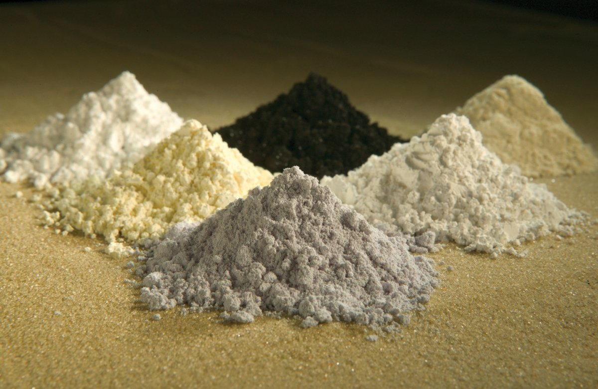

[한중수교 34년②] 희토류 통제 1년, 한국 수입량이 76% 줄었다
2025년 4월 중희토류 7개 허가제로 시작해 10월 12종과 역외통제로 넓혔다
2026년 1월 6일 중국이 일본행 이중용도 품목을 막자 한국이 간접 영향권에 들었다
중국이 원소재, 일본이 가공, 한국이 완제품을 맡은 사슬이 그대로 약점이 됐다
AI경세제민=김갑봉 기자 | 2024년 이 연재는 한중 무역의 위험으로 두 가지를 꼽았다. 반도체 편중과 공급망 리스크였다. 2026년 두 가지는 모두 더 뚜렷해졌다. 반도체 편중은 ①편에서 봤다. 이번에는 공급망이다.

※ 이 연재는 2024년 인천투데이에 실린 「한중수교 32년」 연재를 잇는다. 논지는 이어받되 수치와 사실은 2026년 10월 기준으로 다시 확인해 썼다.
2025년 4월에 시작된 일
중국은 2025년 4월 미중 무역 갈등이 거세지자 중희토류 7개 원소에 이중용도 수출 허가제를 걸었다. 군사 전용이 가능한 품목은 허가를 받아야 수출할 수 있게 한 조치다.
2025년 10월에는 대상을 12종으로 늘렸다. 중국 기술로 해외에서 만든 제품에도 적용하는 역외수출통제 규정까지 넣었다. 이 2차 조치는 미중 협의에 따라 시행이 미뤄진 상태다.
2026년 1월 6일 중국 상무부는 군사적 용도로 쓰일 수 있는 이중용도 품목의 일본 수출을 금지한다고 발표했다. 희토류가 포함됐다. 2025년 11월 다카이치 사나에 일본 총리의 타이완 유사시 발언 뒤 중일관계가 내려앉은 흐름 위에 있는 조치다.
1년 동안 무엇이 줄었나
2025년 4월부터 2026년 3월까지 중국의 희토류 영구자석 수출량은 5810만㎏이다. 전년보다 4% 줄었다. 니케이아시아가 중국 세관 자료를 분석한 수치다. 금액으로는 28억달러로 오히려 조금 늘었다. 물량은 줄고 값은 올랐다는 뜻이다.
품목별로 보면 더 가파르다. 부피 기준으로 이트륨 산화물이 53%, 디스프로슘 산화물이 65%, 테르븀 산화물이 59% 줄었다. 희토류 화합물 전체 수출은 금액 기준으로 17% 줄었다.
한국의 숫자는 더 크다. 2025년 4월 중국이 허가제를 시행한 뒤 한국의 희토류 수입량이 76% 급락했다는 보도가 나왔다.
중국이 캐고, 일본이 가공하고, 한국이 만든다
2026년 1월 중국의 조치가 일본을 겨눴는데 한국이 긴장한 까닭이 여기 있다.
공급망이 중국에서 원소재가 나와 일본에서 가공 소재가 되고 한국에서 완제품이 되는 구조이기 때문이다. 일본의 생산이 막히면 한국으로 연쇄 충격이 온다. 산업통상부 공급망 점검회의에서 나온 진단이다.
배터리 업계가 가장 걱정했다. 전해액과 음극재, 분리막에서 일본산 의존이 높기 때문이다. 반도체와 디스플레이, 자동차, 철강 업종 단체도 회의에 참석했다.
중국이 한국을 직접 겨누지 않아도 한국이 다친다. 2019년 일본의 수출규제가 한국을 직접 때린 것과는 다른 방식이다. 사슬의 중간이 끊기면 끝도 멈춘다.
정부가 한 일
2026년 1월 8일 산업통상부가 윤창현 산업자원안보실장 직무대리 주재로 산업 공급망 점검회의를 열었다. 핵심 광물을 중심으로 공급망 교란 시나리오별 대응을 검토하기로 했다. 기존 희토류 공급망 태스크포스를 '산업안보 공급망 TF'로 넓혀 가동하기로 했다.
문신학 산업통상부 차관은 "우리 기업의 생산 활동에 차질이 없도록 모든 가능성을 열어 두고 수급 관리에 만전을 기하겠다"고 밝혔다.
2026년에는 공급망 3법으로 부족하다며 희토류특별법을 따로 만들자는 논의도 시작됐다.
다른 나라는 어떻게 하고 있나
유럽은 중국의 허가 승인률이 25%에 못 미쳤다. 유럽중앙은행 연구진은 대형 유럽 기업의 80% 이상이 중국 희토류 생산업체와 세 단계 안에서 연결돼 있다고 추산했다.
대체 공급망을 만드는 쪽도 움직인다. 오스트레일리아 라이나스는 중희토류 분리를 시작하고 일본·미국과 가격 보장 협약을 맺었다. 캐나다 네오 퍼포먼스 머티리얼즈는 에스토니아 정제시설에서 중희토류 분리 공정을 돌리기 시작했다. 미국 에너지퓨얼스는 유타 시설에서 디스프로슘 산화물 생산에 들어갔다.
그래도 시간이 든다. 프로젝트 블루의 데이비드 메리먼은 중희토류 고가 시세가 내년에도 이어질 것으로 봤다. 중국에 기대지 않는 공급망을 갖추는 데 20~30년이 걸릴 수 있다는 분석도 나온다.
방산이 가장 급하다. 록히드마틴의 소재 엔지니어는 통제 품목 없이 시스템을 설계하는 길을 찾고 있다고 했고, 오를리콘 서피스 솔루션즈 쪽은 대체 공급망이 돌기까지 1년 넘게 걸릴 수 있다고 했다.
한국이 선 자리
①편에서 본 것처럼 2026년 한국의 대중 수출은 절반이 반도체다. 전체 수출로도 43.8%다. 팔 것은 한 품목에 몰려 있다.
살 것은 반대다. 첨단산업의 바탕이 되는 원자재 가공품에서 중국 의존이 남아 있다. 한국무역협회 분석은 2016년 이후 중국이 자급률과 기술 수준을 올리면서 세계에서 들여오는 중간재와 최종재 비중을 줄이고 1차산품 수입을 늘렸다고 봤다. 한국의 대중 수출은 석유화학·이차전지 관련 원자재 가공품과 반도체·디스플레이 고위기술 중간재로 갈리는 경향이 짙어졌다.
파는 쪽은 반도체 하나에 걸렸고 사는 쪽은 중국 광물에 걸렸다. 2026년 한중 무역의 구조가 그렇다.
무엇을 해야 하나
중국의 희토류 통제는 일시적이고 되돌릴 수 있는 방식으로 설계됐다. 그래야 가격 결정권을 쥔 채 지렛대로 쓸 수 있기 때문이다. 풀었다 조였다 할 수 있는 수단은 끊는 수단보다 오래 간다.
한국이 할 수 있는 일은 셋이다.
첫째, 원자재 가공과 제련 기술을 국산화하는 것이다. 캐는 일은 못 해도 가공은 할 수 있다. 중국에서 일본으로 가던 공정을 한국이 가져오면 사슬이 짧아진다.
둘째, 핵심광물안보파트너십(MSP) 같은 다자 협의체에서 자리를 넓히는 것이다. 혼자서는 20~30년을 기다려야 한다.
셋째, 비축이다. 통제가 일시적이고 되돌릴 수 있는 방식이라면 버티는 기간을 늘리는 것이 곧 협상력이다.
수교 34년이 지났다. 1992년의 한중 무역은 서로에게 없는 것을 주고받는 관계였다. 2026년의 한중 무역은 한쪽이 가진 것으로 다른 쪽을 누를 수 있는 관계가 됐다. 다음 편에서는 그 관계를 제도로 묶으려는 한중 자유무역협정 2단계 협상을 본다.
참고문헌
·"희토류 수출통제 1년, 글로벌 공급망 4% 감소·방산은 '고사 위기'", 글로벌이코노믹, 2026년 5월 17일(니케이아시아의 중국 세관 자료 분석 인용). https://www.g-enews.com/article/Global-Biz/2026/05/2026051707120448102bd56fbc3c_1
·"중국 희토류 수출 통제…한국 공급망 '불똥' 튀나", 서울신문, 2026년 1월 9일. https://www.seoul.co.kr/news/economy/2026/01/09/20260109003002
·"中 대일 희토류 통제 여파, 한국도 '간접 영향권'", 에너지경제, 2026년 1월 8일. https://www.ekn.kr/web/view.php?key=20260108023356526
·"'희토류특별법' 추진 본격화…'공급망 3법으론 부족'", 이투데이, 2026년. https://www.etoday.co.kr/news/view/2621084
·한국무역협회, 「공급망 분석을 통해 살펴본 한·중 무역구조 변화와 시사점」, 2024년 6월 11일. https://www.kita.net/researchTrade/report/tradeFocus/tradeFocusDetail.do?no=2608
·김·장 법률사무소, 「중국의 무역규제 동향 및 그 시사점」. https://www.kimchang.com/ko/insights/detail.kc?sch_section=4&idx=34422
·산업통상부, 「산업 공급망 점검회의」, 2026년 1월 8일.
※ 이 기사는 AI 프로그램 클로드를 활용해 작성했습니다.
관련기사
- [한중수교 34년③] 상품은 2700억달러인데 서비스는 388억달러뿐이다
- [한중수교 34년①] 대중 흑자가 4년 만에 돌아왔다, 그 절반이 반도체 하나다
- [한중수교 34년④] 한중 카페리 여객 41만명, 2019년의 40%에 머물러 있다
- [한중수교 34년⑤] 한국에서 새로 등록한 전기차 3대 중 1대가 중국산이다
저작권자 © AI경세제민 무단전재 및 재배포, AI학습 및 활용 금지